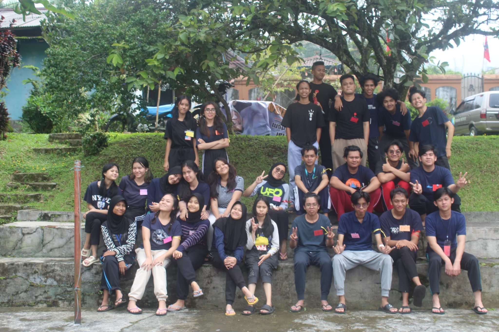
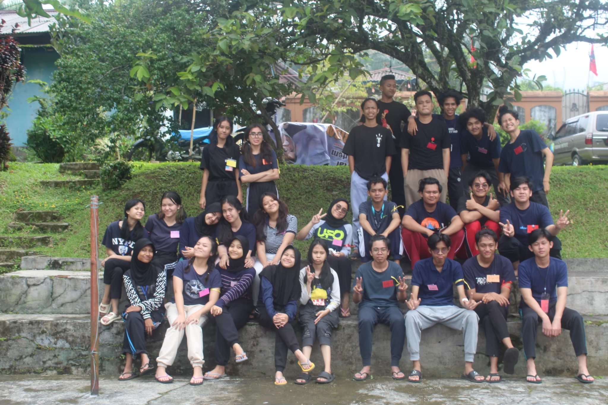

Program Pilihan
Beberapa Program Pilihan IPCrew untuk IPTuners!

PODCAST
Saat ini, Radio IPFM memiliki channel podcast yang dapat didengarkan oleh IPTuners di platform Spotify. Dapatkan berbagai konten menarik dan informatif langsung dari perangkat Anda dengan mencari "IPFM" di Spotify sekarang juga!.
SIARAN ON AIR
Jangan lupa untuk mendengarkan siaran on air dari radio IPFM di channel 107.7 FM ya, IPTuners! Selalu ada program seru dan lagu-lagu hits yang menemani harimu. Tetap setia di frekuensi kami untuk informasi terkini dan hiburan yang seru!
LIVE
Jangan lupa untuk juga menyaksikan Live streaming di Instagram yang akan membahas seputar hal-hal yang happening, loh, Iptuners! Di sini, kamu akan mendapatkan update terbaru, tips, dan trik eksklusif yang pastinya tidak boleh kamu lewatkan. Ajak teman-temanmu untuk join dan nikmati keseruannya bersama kami! See you there!.


 
